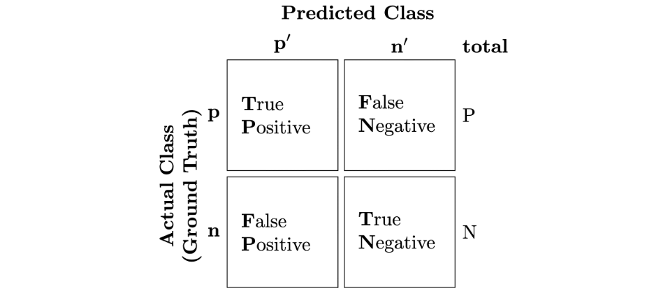

Disparate Impact
Machine learning (ML) is commonly used to make decisions in practice. For example, in a loan case, banks often decide to approve or deny a borrower with the assistance of ML models, with the borrower's information as the input, such as age, gender, employment, etc. However, it turned out that the ML model can be biased in a way that the model is more likely to approve the loan of male borrowers than female borrowers, even though they have a similar background. In this section, we aim to learn a popular fairness metric, called Disparate Impact, to mathematically measure the fairness of an ML model.
Before that, we need to learn the confusion matrix first. The confusion matrix enables the comparison between the predictions of the ML model and the actual outcome (ground truth) on a data set. Confusion matrices are in the form of a 2X2 matrix, as shown below. The rows represent the ground truth — i.e., the number of people who got approved for the loan (p) and the number of people who were denied (n). Columns represent the number of people the model predicted were approved for the loan p’ and how many were denied n’. Each of the 4 cells represents the number of times predictions matched or mismatched with the ground truth.

Based on understanding the confusion matrix, let’s learn about Disparate Impact. Consider the example below, where the two confusion matrices represent the results of an ML model on the men group (privileged group) and the women group (unprivileged group), respectively.

Disparate Impact compares the proportion of individuals in the unprivileged group who received a favorable prediction to the proportion of individuals in the privileged group who received a favorable prediction. The calculation involves the proportion of the unprivileged group that received the positive outcome divided by the proportion of the privileged group that received the positive outcome. The ideal value of this metric is 1.0 or 100%. As shown in the loan example, this would be (60/100)/(70/100)= 0.85 or 85%.
Guiding questions: